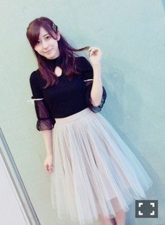

| 2016/05 17 Tue | 斎藤ちはる 母親からスコーン禁 止令出されました。 多分、人類史上初。 (´>∀<｀)ゝ |
ちはるーむへようこそ\( ˆoˆ )/
スコーンの食べ過ぎで、体がぷっくりしてきたよ。やばいよ。ちはるです。
先日は東京ビックサイトにて、個別握手会でした！
4部
photo by Kawago.
川後は本当カメラマンになれる。感謝！
そして私もカメラが欲しくなる。
いいカメラないかな〜
snidelのトップスに、
黒の短めのタイトスカート！
イヤリングやネックレスはシルバーベースで、少し大人っぽく。
5部

Honey Cinnamonのトップスに
snidelのスカートで、
46時間テレビの時のカラオケコーデ！！
未だにカラオケ褒めてもらうこと多くって
本当嬉しい( ;o; )( ;o; )
また始まる46時間テレビもカラオケあったら頑張ろう！！♡
今回の個別、たくさんの方が来てくれた( ;o; )
すごく励みになりました。
ありがとう。
いつも幸せをありがとう(﹡ˆ ˆ﹡)
そしていまは絶賛「じょしらく弐」公演中！
チームくは、2公演を終え、残り3公演。
私の創作落語も2日目に終わりました\( ˆoˆ )/
私のやった創作落語は、元は「明烏」が題材になっています。
まだ落語が終わってないメンバーもいるから
じょしらくがすべて終わったら詳しく説明するね(｡･o･｡)ﾉ
それにしても落語。
とてつもなく楽しかった！！
正直な話、緊張しすぎてなにもやる気が起きなくてやりたくない。。って思っていたの。
でも落語を披露していくうちに、お客さんが反応をしてくれて、楽しんでくれているんだ！
と思ったら楽しくて楽しくてしょうがなかったです！！
1人で話す落語は責任重大だけど、
その分1人だからこそ自由にできる。
自分のワールドに引きずり込むことができる。
また機会があったら披露したいな〜
観てない方にも観てほしいな〜
と思う今日この頃。
残り3公演！
千秋楽まで突っ走っていく！！
わちゃわちゃ。ずー川後
ずーじょしらく来てくれた♡(いくちゃん、みおなも♡)
ずー差し入れでお団子くれたの。
美味しかった(﹡ˆ ˆ﹡)ありがとずー♡
観てくれた通り、乃木中での部活動は、悩みに悩んだ結果スキューバダイビングにしましたー！
凄く迷ったの。。
ボードゲーム部。。
でもボードゲームなら普段からずーの家とかで気軽に出来そう！と思い。
中々自分ではできないスキューバダイビング部にしたよ(｡･o･｡)ﾉ
メンバーも、いくちゃん、玲香、優里の4人で、すごい楽しそう...♡
メンツが、濃い。笑
あ〜〜〜(｡-_-｡)
誰かフランス語教えてほしいの。。
頑張ってるんだけど。。
難しい( ◦˙ ˙◦ )
第二外国語、フランス語( ◦˙ ˙◦ )
一緒の方いるかな〜？
斎藤ちはる